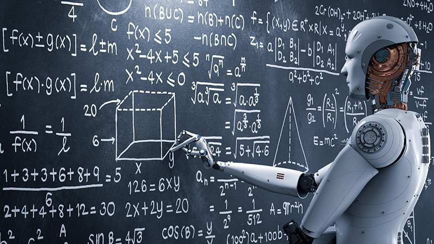

Challenges of Artificial intelligence Page
Links:
<
The cognitive capabilities of current architectures are very limited, using only a simplified version of what intelligence is really capable of. For instance, the human mind has come up with ways to reason beyond measure and logical explanations to different occurrences in life. What would have been otherwise straightforward, an equivalently difficult problem may be challenging to solve computationally as opposed to using the human mind. This gives rise to two classes of models: structuralist and functionalist. The structural models aim to loosely mimic the basic intelligence operations of the mind such as reasoning and logic. The functional model refers to the correlating data to its computed counterpart.[97]
The overall research goal of artificial intelligence is to create technology that allows computers and machines to function in an intelligent manner. The general problem of simulating (or creating) intelligence has been broken down into sub-problems. These consist of particular traits or capabilities that researchers expect an intelligent system to display. The traits described below have received the most attention
